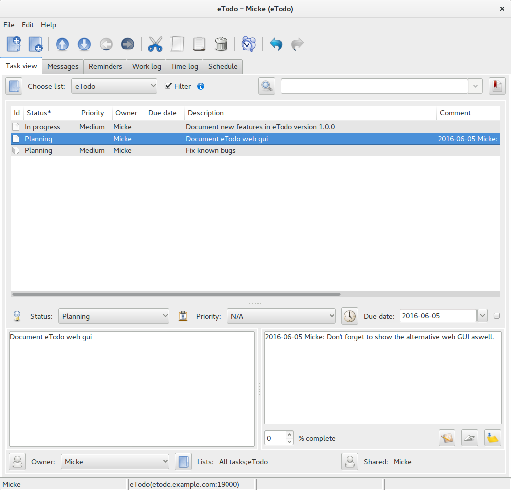
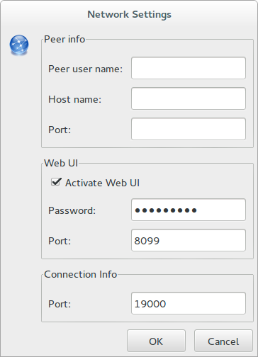

Introduction
eTodo is a P2P task manager written in erlang. Key functionality include:
- Tasks that can be shared between peers
- Communication between peers using chat
- Task progress that can be shown to non eTodo users using “link view” functionality
- A To-Do list in eTodo has a default order.It is easy to move tasks up and down within a list
- A task can be in more than one list
- A task can have one or more sub tasks, and so can sub tasks.
- Non intrusive reminders
- Local storage (no central server)
Getting started
Create and use To-Do lists
To-Do list “All tasks”
All users have a To-Do list called “All tasks”, this list includes all To-Do:s (including all sub To-Do:s) created in eTodo. “All tasks” is a system list and cannot be removed.
Use “All tasks” list if you want to search in all your To-Do:s
It can also be used to find new To-Do:s that has been shared with you. To find To-Do:s that are not assigned to any other list other then “All tasks” use filter “Assigned” that you access by right clicking on the column header named “Id” or you can just change list to "Inbox"
To-Do list “Inbox”
This list isn't actually a To-Do list. It is the list "All tasks" with filter "Assigned" activated. This is the easiest way of checking for new To-Do:s or To-Do:s which hasn't been assigned to a list.
How to create a new To-Do list
You create a new To-Do list using the button:
 A window will appear where you can add, remove and rename To-Do lists.
A window will appear where you can add, remove and rename To-Do lists.
After you have created a new list, choose the list in the drop down to the right of the “Manage lists” button.
How to create a new To-Do
You can create a To-Do using the toolbar buttons: 
The first toolbar button will place the new To-Do in the beginning of the To-Do list. The second toolbar button will place the new To-Do at the end of the To-Do list. Control+N is the keyboard short cut for creating a new To-Do at the end of a To-Do list.
How to edit a To-Do
A To-Do is edited using the bottom part of the main To-Do window.

Status and priority is changed using the comboboxes in the edit area. Status can also be changed by right clicking on a To-Do and using the context menu.
Reminders are set using the button:  "Set reminder for task"
"Set reminder for task"

The check box Start date can enable/disable a reminder.
- Choose a start date
- Choose a start time
- Choose how often a message about the To-Do should be sent to the reminder window.
- Execute command can be used to run an external program when the reminder occurs, for instance to play a sound.
- End date is set if the reminder should stop even if the task isn't set to done.
Due date is just to set a date when the task is due, it has nothing to do with reminders. The description field is for writing about the task that should be done. The comment field is for writing about the ongoing work on the task.
“Add comment” adds the date and user name to the end of the comment field.
 “Send message about task update”
“Send message about task update”
Send a message to all user the task is shared with, that says the task has been updated.
Owner indicates which user that is supposed to own the task at the moment.
“Manage owners”
If you need to set an owner that isn't an eTodo user, you can do that using this button. Just create a new owner.
“Add task to list”
Is used to assign lists to a task this can also be done by right clicking the To-Do and adding/removing the ToDo to a list using the "Lists" sub menu.
To move a task to a sub task, use cut/paste task.
“Share task with user”
A task can be shared with other peers. A shared task will be added to the “All tasks” list of the other peer. Updates to the shared task is done in real time.
Use the "Inbox" to find tasks that has been shared with you.
Using search function
The list “All tasks” is a good place to start when you want to search through all your To-Do:s. When you are doing a search you need to configure which fields to search in.
This is done using the button: “Configure which fields to search in”
To do a search enter the text you want to search for in the search field and press enter. This will do a normal search which is a non case sensitive text search.
There are two more search methods available
- Regexp search
- Advanced search
Regexp search is activated by writing “re~” before your search string. To learn about the regexp search syntax check out the documentation for the re module in Erlang.
Advanced search is activated by writing “as~” before your search string. You have the following logical operators when using advanced search:
- or (used to get the union of two results)
- and (used to get the intersection of tow results)
- not (used to get every thing but the result written after not)
To get the contents of a ToDo list you use @”Listname”
There is also the possibility of using the two other methods of searching while using advanced search. This is accomplished by using the following construct. {[Field1, Field2, ...], “value”} where value is the search string and Field* is the columns to search through.
Examples:
as~ {[Owner], “mikael”} and @”Work”
Gets all To-Do:s that have owner “mikael” and is in the list “Work”
as~ @”Work” or @”Private”
Gets all To-Do:s in the lists “Work” and “Private”
as~ @”Work” not @”Boring”
Gets all To-Do:s inte the list “Work” which isn't in the list “Boring”
Connecting to other eTodo peers
eTodo can connect to other eTodo users by connecting a circle. As long as the other peer is connected to the same circle using the same password the two peers will connect.
To connect to a circle a peer in that circle needs to be configured.
Open the network settings window:

Enter the eTodo peer info:
- Peers user name
- Host name or IP-address for the eTodo peer (connected to the circle)
- The port of the peer (default 19000)
After that is done, just log into the circle using Ctrl+l and all the peers connected to the circle should appear.
Firewalls
To be able to directly connect from peer A to peerB, peer B:s IP and port needs to be accessable.
If direct communication isn't possible due to firewall issues, eTodo looks for another peer C which is connected to peer B. It then connects to peer B using peer C as a proxy.
Data can go trough multiple peers before it reaches its destination. It always tries to take the shortest route.
Connecting to the web gui using your phone is almost always a problem. This can be solved using another eTodo installation as a proxy. You need to set the web password of the proxy server to the same password as the eTodo peer you are trying to reach.
After the installation of the proxy peer is done, use "Make proxy link" menu alternative on the destination peer to make a link which uses the proxy peer to connect to the web gui.
Summary
Why did I make eTodo?
- Because its fun, and I wanted to learn to use wxErlang.
- My own favourite To-Do manager QTodo, was getting a bit outdated
- I wanted to do something in erlang that I could release as open source
Why make it a P2P application?
The short explanation is that me and a friend took a course in P2P systems and made this our programming assignment.
Another reason was to solve the problem of sharing To-Do:s.
My goal with eTodo was to be able to have all my To-Do:s in one application, and I don't really like to save my own personal To-Do:s on a central server not owned by me, and my employer doesn't really like me to save work To-Do:s on a central server outside the company, so storing everything in a local database solves both issues.
Design goals of eTodo
- Support multiple lists, that can share the same To-Do
- Support sub To-Do:s, so you can split a big To-Do in to several smaller To-Do:s
- Support user default sort order, a To-Do should be easy to move up and down within a To-Do list
- Support Undo and Redo
- Support for sharing To-Do:s with people using eTodo
- Support for showing To-Do:s to people not using eTodo
- Support for looking, changing status and adding To-Do:s from your phone
- Support for printing To-Do:s
- Support for reminders that doesn't interrupt your work ( I hate pop-ups ;) )
- Everything should be saved locally, and not on a centralised server
Features planned to be added in the future
- Improve the graphical user interface
- Improve overall performance
- Better connection handling
- HTTP-tunneling for connections between eTodo peers
- Email integration using IMAP
- More documentation
Features that might be added in the future
- A more customisable and better graphical user interface for the web
- An app for iPhone
- An app for Android
- Everything that the users of eTodo contributes or wants( that I like ;)